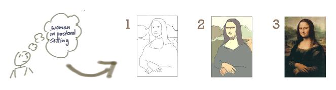

Iterative Development¶
Автор раздела: Ivan Zakrevsky
📝 "The "iterative development" model performs initial planning and then consists of a cyclic process of prototyping, testing, analyzing and refining the requirements and the solution. "Iterative" models repeatedly perform the life cycle processes to deliver prioritized system functions sooner, with refined or more complex elements of the system coming in later iterations."
—"ISO/IEC/IEEE 12207:2017 Systems and software engineering - Software life cycle processes"

Iterative Development. The image source is "Don't Know What I Want, But I Know How to Get It" by Jeff Patton & Associates¶
💬 If you run into a dead end in one of the areas, iterate! Incremental refinement is a powerful tool for managing complexity. As Polya recommended in mathematical problem solving, understand the problem, devise a plan, carry out the plan, and then look back to see how you did [Polya 1957].
— "Code Complete" 2nd edition by Steve McConnell
💬 ""Iteration" here means applying a function to itself."
—"Concrete Mathematics: A Foundation for Computer Science" 2nd edition by Ronald L. Graham, Donald E. Knuth, Oren Patashnik
В математике итерация - это применение функции самой к себе, и именно этим обеспечивается "Responding", т.к. каждый новый вызов получает на вход результат работы предыдущего вызова.
💬 The key to iterative development is to frequently produce working versions of the final system that have a subset of the required features.
💬 Iterative development makes sense in predictable processes as well. But it is essential in adaptive processes because an adaptive process needs to be able to deal with changes in required features. This leads to a style of planning where long term plans are very fluid, and the only stable plans are short term plans that are made for a single iteration. Iterative development gives you a firm foundation in each iteration that you can base your later plans around.
—"The New Methodology" by Martin Fowler
💬 In this thinking waterfall means "do one activity at a time for all the features" while iterative means "do all activities for one feature at a time".
💬 Indeed we've found that delivering a subset of features does more than anything to help clarify what needs to be done next, so an iterative approach allows us to shift to an adaptive planning approach where we update our plans as we learn what the real software needs are.
💬 But it is easy to follow an iterative approach (i.e. non-waterfall) but not be agile. I might do this by taking 100 features and dividing them up into ten iterations over the next year, and then expecting that each iteration should complete on time with its planned set of features. If I do this, my initial plan is a predictive plan, if all goes well I should expect the work to closely follow the plan. But adaptive planning is an essential element of agile thinking. I expect features to move between iterations, new features to appear, and many features to be discarded as no longer valuable enough.
My rule of thumb is that anyone who says "we were successful because we were on-time and on-budget" is thinking in terms of predictive planning, even if they are following an iterative process, and thus is not thinking with an agile mindset. In the agile world, success is all about business value - regardless of what was written in a plan months ago. Plans are made, but updated regularly. They guide decisions on what to do next, but are not used as a success measure.
—"Waterfall Process" by Martin Fowler
Итерация может дать Responding, а может и не дать. Важны не итерации сами по себе, а именно Responding. Поэтому в Agile Manifesto пишут про Responding, а не про итерации.
Ключевым элементом итеративной разработки является Adaptation.
См. также:
"Iteration" at Glossary of agilealliance.org
См.также

{kind=link}